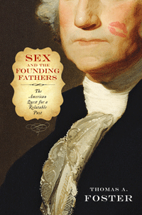

<body bgcolor="#FFFFFF" text="#000000" link="#0000FF" vlink="#CC0000" alink="#CC0000"><center><hr width="350" size="1" align="center" noshade>How the desire to know the "real" Founders has influenced the stories we tell and remember<hr width="350" size="1" align="center" noshade><p><a href="https://cdcshoppingcart.uchicago.edu/Cart/ChicagoBook.aspx?ISBN=9781439911020&&PRESS=temple" target="_top">Buy this book!</a> | <a href="https://cdcshoppingcart.uchicago.edu/Cart/Cart.aspx?PRESS=temple" target="_top">View Cart</a> | <a href="https://cdcshoppingcart.uchicago.edu/Cart/Cart.aspx?PRESS=temple" target="_top">Check Out</a></p><p></p></center><!--none//--><h1>Sex and the Founding Fathers</h1>
<H2>The American Quest for a Relatable Past</H2>
<h3>Thomas A. Foster</h3>
<P>cloth 1-4399-1102-9 $28.50, Jan 14, <FONT COLOR=#990033>Available</FONT>
<br>paper 1-4399-1103-7 $23.95, Oct 16, <FONT COLOR=#990033>Not Yet Published Preorder</FONT>
<br>Electronic Book 1-4399-1104-5 $28.50 <FONT COLOR=#990033>Available</FONT>
<BR> 232 pp
6x9
15&nbsp;halftones
</P><BLOCKQUOTE><I>"Does it matter with whom and how often Washington, Hamilton, and Jefferson had sex? Apparently so, as this fascinating and erudite work demonstrates. Foster deftly documents historians’ intense efforts to portray the Founders as all up to heteronormative code, conjuring intense affairs—sometimes out of thin air—and downplaying problematic associations. </I>Sex and the Founding Fathers<I> is a must read for all who are interested in the founding era and the historiography of the period."</I>
<br>&#151<b>Annette Gordon-Reed</b>, author of <I>The Hemingses of Monticello: An American Family</I></I></BLOCKQUOTE>
<P>Biographers, journalists, and satirists have long used the subject of sex to define the masculine character and political authority of America's Founding Fathers. Tracing these commentaries on the Revolutionary Era's major political figures in <I>Sex and the Founding Fathers</I>, Thomas Foster shows how continual attempts to reveal the true character of these men instead exposes much more about Americans and American culture than about the Founders themselves.
<P><I>Sex and the Founding Fathers</I> examines the remarkable and varied assessments of the intimate lives of George Washington, Thomas Jefferson, John Adams, Benjamin Franklin, Alexander Hamilton, and Gouverneur Morris from their own time to ours. Interpretations can change radically; consider how Jefferson has been variously idealized as a chaste widower, condemned as a child molester, and recently celebrated as a multicultural hero.
<P>Foster considers the public and private images of these generally romanticized leaders to show how each generation uses them to reshape and reinforce American civic and national identity.
<BR>&nbsp;<h2>Excerpt</h2><P>Excerpt available at <a href="http://www.temple.edu/tempress">www.temple.edu/tempress</a></p>
<BR>&nbsp;<h2>Reviews</h2>
<p><I>“</I>Sex and the Founding Fathers<I> is a lively book on a topic whose time, as the author emphasizes, has not so much come as never departed. Americans have always been interested in the private lives of the Founders, and Foster is a trustworthy guide, whose ample research yields very fine interpretive judgment of their life stories. In this original book, he argues that the shape of our interest in the Founders’ intimate and personal stories has largely tracked changes in the history of sexuality in the United States. His chapter on Washington is convincing, his chapter on Adams is delightful, and his chapter on Hamilton was perhaps my favorite—I learned much that I didn't know.”</I><br>&#151<b>David Waldstreicher</b>, Professor of History, Temple University
<p><I>“</I>Sex and the Founding Fathers<I> examines the changing attitudes of Americans toward six of the so-called Founding Fathers in terms of their ‘intimate lives.’ Foster shows that the enduring need to see Revolutionary leaders as models and as mirrors of our own values has shaped the ways in which biographers and other writers have depicted or suppressed the sexual histories of these individuals. He does a fine job of showing how cultural trends in general and changing attitudes toward sex in particular have influenced the tone and content of 'Founding Father' biographies over the past two centuries.”</I><br>&#151<b>Richard Godbeer</b>, Professor of History, University of Miami
<p><i>"In this concise, engaging book, Foster explores the intimate lives of six Founding Fathers, and, more importantly, the way their sex lives have been presented and analyzed over the years. Focusing on George Washington, Thomas Jefferson, John Adams, Benjamin Franklin, Alexander Hamilton, and the oft-forgotten Gouverneur Morris, Foster deftly demonstrates the ways these men’s private lives have been essentially rewritten to present the normative, virtuous, and manly Founders Americans choose to believe in..... Proving that you can’t trust biographers, Foster ably reveals that sex has always factored into national identity and that the Founders were flesh-and-blood men, unable to support idealistic American standards of morality."</i><br>&#151<b><i>Publishers Weekly</i></b>
<p><i>"What fascinates [Foster], and what’s the subject of his book, is how the public has always hungered for stories about the Founders’ sex lives. At root, Foster argues, sex has always been a critical, though underappreciated way that Americans have tried to make the Founders relatable. It’s how we make them seem human, if no less heroic.... Foster’s subject should lure more readers than a typical academic book. But they should expect a serious message. We crave stories about the Founders’ sex lives, but cannot handle the unseemly truths, he writes—'so we rewrite and respin and reremember them in various ways to present them in a positive light.' Our 'romanticized view,' gets us no closer to knowing who [the] Founders actually were, and ultimately 'serves only the present.'”</i><br>&#151<b><i>Daily Beast</i></b>
<p><i>"Here is a scrupulous scholarly book that edifies and entertains — and has as much to say about the genre of biography as it does about the sex lives of the founding fathers."</i> <br>&#151<b><i>StarTribune</i></b>
<p><i>"Foster reveals how each generation has sought to understand the founders as human beings.... it is through exploring these men as people that we understand and relate to them. As times and social mores about masculinity and sexuality have changed, so have interpretations of these men and their personal lives. VERDICT: Foster is looking at the how and why of his subjects. Readers looking for...a better understanding of how and why biographers explore these topics, and why we care, should look to this fascinating and well-written work."</i><br>&#151<b><i>Library Journal</i></b>
<p>See Scott McLemee's "shocking" review in <b><i><a href="http://www.insidehighered.com/views/2014/02/26/review-thomas-foster-sex-and-founding-fathers-american-quest-relatable-past" target="new">Inside Higher Education</a></i></b>
<p><i>"Foster traces how the sex lives (what we know about them, which in most cases is not much) have changed in biographies over time from right after the Revolutionary War to now. It is a fascinating look at how society has perceived the Founders, and the importance of their sex lives is to the public."</i> <br>&#151<b><i>The Researching Librarian</i></b>
<p><i>"[I]nteresting and informative.... Foster is at his most provocative when he traces how public discussions of sex and our American patriarchs have evolved over the past few centuries."</i> <br>&#151<b><i>The Arts Fuse</i></b>
<p><i>"The most interesting character in the whole book was Gouverneur Morris.... [I] recommend the book if you are at all interested in American History, especially the founding of the New Republic."</i><br>&#151<b><i>The Nerdy Word</i></b>
<p><i> "Foster brings his expertise to bear on the way Americans have interpreted the lives of the men whose life and history have greatly affected Americans' imaginations.... Foster's narrative is a thoughtful one that subtly challenges readers and historians to consider their motives in reading and writing history. Readers walk away with an understanding of how contemporary trends influence historical output and perceptions of the founders outside of academia. However, Foster's real contribution here is his evidence of the ways manliness and sexuality influence our understanding of the founders and the subtle ways that sexuality influences our mythmaking. Reading Foster's narrative, one concludes that the discipline of history provides a starting point for understanding the human experience, and self-consciously works toward creating histories true to the past while also relevant to our current moment. In this way, we will continue to build a truer past—full of vice and virtue."</i> <br>&#151<b><i>Common-place</i></b>
<p><i>"</i>Sex and the Founding Fathers<i> considers how the sexual exploits of the founding fathers have been viewed over time by the media, academics, and the general public.... Foster proffers in-depth analysis of how the historical memory of the founding fathers and their sex lives have evolved over time.... the historiography is impressive.... The two most enjoyable chapters are the ones on [Thomas] Jefferson and [Gouverneur] Morris."</i> <br>&#151<b><i>History: Review of New Books</i></b>
<p><i>"</i>Sex and the Founding Fathers<i> has value as a source of data.... [which] raises important questions about gender, sexuality, and masculinity as normative and actual behaviors shift over time as they structure personal and national identities."</i> <br>&#151<b><i>American Studies</i></b>
<p><i>"Foster tells us that each new generation has inquired into the intimate lives of great men and found reflections of its own habits and desires and anxieties....Using the methods of intellectual and cultural history, Foster examines contemporary and scholarly interpretations of the sex lives of George Washington, Thomas Jefferson, John Adams, Benjamin Franklin, Alexander Hamilton, and Gouvernor Morris. Foster holds that we read and write about our Founding Fathers’ intimate habits because we want these icons of masculinity to be relatable. Foster is right; we do seek ourselves in our histories."</i><br>&#151<b><i>Journal of American History</i></b>
<p><i>"[Foster's] book is not directly about sex and the founding fathers but is instead a meta-commentary on the long history of popular and scholarly fascination with the founders’ sexual lives.... This is a book about </i>our<i> desired erotic relations to the erotic lives of the founders. But it seems to be forever impossible for us to have a stable relation to the sex of the founding fathers: our relation to their sex always and inevitably fails because it’s really about us and what kind of objects we want them to be for us... Wisely, Foster does not try to say what a true or authentic relation to the sex of the founders would be."</i><br>&#151<b><i>American Literary History</i></b>
<p><i>"[C]hroniclig the many sexual narratives that have surrounded the founders from the eighteenth century to the present.... Foster’s two most interesting chapters treat Thomas Jefferson and Gouverneur Morris.... Foster’s chapter on Gouverneur Morris would enrich any syllabus on the history of sex in the United States.... Foster concludes that modern biographers have emphasized Morris’s sexual exploits in order to endear him to 'contemporary audiences who may otherwise pull away from the cane-wielding aristocratic founding father.' His argument, that such stories have incorporated heterosexual masculine entitlement into American national identity, seems especially true today."</i><br>&#151<b><i>The Journal of the History of Sexuality</i></b>
<p><i>"Foster adds another layer of complexity to this historical commonplace: We cannot really know and understand the Founders if we simply romanticize their private lives in ways that continue to make them palatable to our own sensibilities.... Foster usefully describes an evolution in our collective consciousness about sexuality that has shaped our memory of the private lives of the Founders over time.... [T]he book is a fascinating exercise in historiography—and a story of what our collective memory of the founders tells us about ourselves—instead of a close reading of historiographical claims against eighteenth-century ideologies of gender and practices of sexuality.... Foster tells this story very well."</i> <br>&#151<b><i>The Journal of the Early Republic</i></b>
<BR>&nbsp;<h2>Contents</h2><P>
<p>Acknowledgments
<br>
<br>Introduction: Remembering the Founders: Sex and the American Quest for a Relatable Past
<br>1. George Washington
<br>2. Thomas Jefferson
<br>3. John Adams
<br>4. Benjamin Franklin
<br>5. Alexander Hamilton
<br>6. Gouverneur Morris
<br>Conclusion
<br>
<br>Notes
<br>Bibliography
<br>Index
</P><BR>&nbsp;<H2>About the Author(s)</H2>
<P><b>Thomas A. Foster</b> is a Professor in the History Department at DePaul University. He is the author of <I>Sex and the Eighteenth-Century Man: Massachusetts and the History of Sexuality in America</I> and the editor of three books, most recently <I>Documenting Intimate Matters: Primary Sources for a History of Sexuality in America</I>.</P>
<BR><H2>Subject Categories</H2>
<p><A HREF="/tempress/history.html" TARGET="_top">History</a>
<BR><A HREF="/tempress/sexual.html" TARGET="_top">Sexuality Studies/Sexual Identity</a>
<BR><A HREF="/tempress/american.html" TARGET="_top">American Studies</a>
</p>
<BR><h2 class="inpageheading">In the series</H2>
<P><I><a href="http://www.temple.edu/tempress/sexual_studies.html" onMouseOver="window.status='Click for other books in this series!'; return true;" onMouseOut="window.status=''; return true;" target="_top">Sexuality Studies</a></i>, edited by Janice Irvine and Regina Kunzel.
</p><p><i>Sexuality Studies</i>, edited by Janice Irvine and Regina Kunzel, features work in sexuality studies broadly construed, in its social, cultural, and political dimensions, and in both historical and contemporary formations. The series includes titles located within disciplinary and interdisciplinary frames that combine theoretical methodologies with empirical research.</p>
<p align="center"><a href="https://cdcshoppingcart.uchicago.edu/Cart/ChicagoBook.aspx?ISBN=9781439911020&&PRESS=temple" target="_top">Buy this book!</a> | <a href="https://cdcshoppingcart.uchicago.edu/Cart/Cart.aspx?PRESS=temple" target="_top">View Cart</a> | <a href="https://cdcshoppingcart.uchicago.edu/Cart/Cart.aspx?PRESS=temple" target="_top">Check Out</a></p><p><font face="Arial" size="1"><a href="copyright.html" onMouseOver="window.status='Web Copyright Policy';return true;" onMouseOut="window.status=''" title="Web Copyright Policy">&copy;</a> 2016 <a href="http://www.temple.edu" target="new" onMouseOver="window.status='Link to Temple University home page';return true;" onMouseOut="window.status=''" title="Link to Temple University home page">Temple University</a>. All Rights Reserved. http://www.temple.edu/tempress/titles/2302_reg.html</font></p>